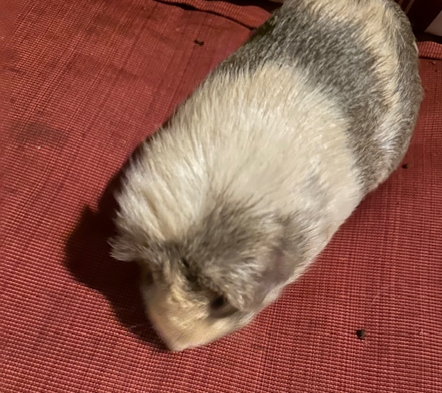

Kalabaska was born on August 19, 2019. She is four years old. Kalabaska loves every type of food. Cucumbers, lettuce, spinach, carrots, tomatoes, leaves, you name it. Kalabaska doesn't really mind baths or nail clippings, unlike Zuzya. Kalabaska always looks like she is wondering why something happens. She is peanut butter colored and brown. She has brown eyes in every surrounding.
